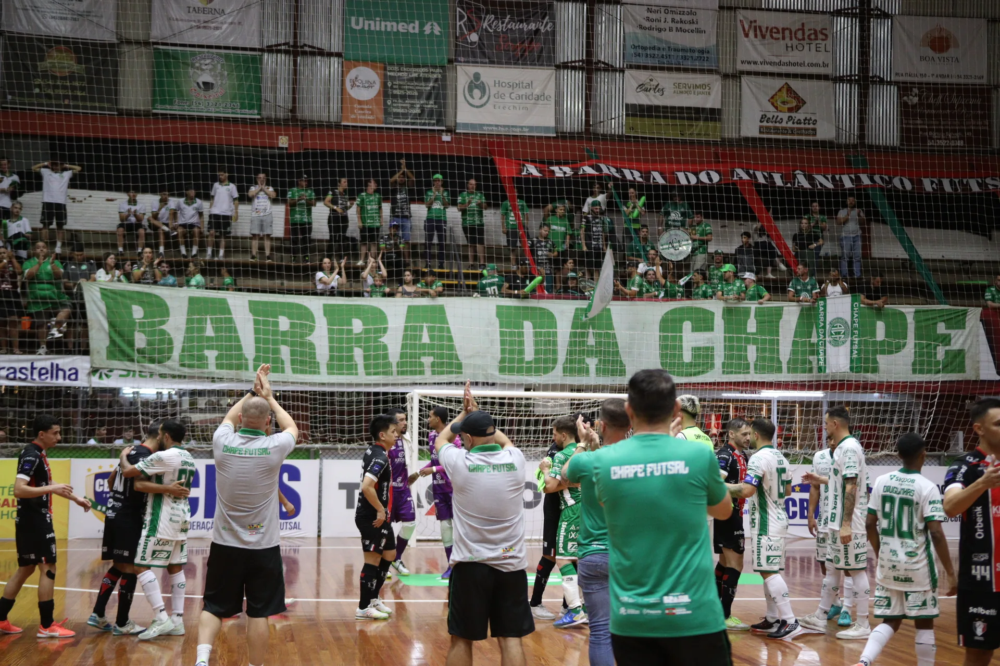

Mais do que um time, uma paixão que une gerações. Conheça a trajetória da Associação Chapecoense de Futsal.
A Associação Chapecoense de Futsal foi fundada oficialmente em 18 de abril de 2011, com a criação do CNPJ, mas o trabalho existe desde 2009. Porém, nas duas primeiras temporadas, a equipe estava vinculada à Associação Chapecoense de Futebol. O projeto surgiu para recolocar Chapecó no cenário do futsal masculino adulto, após um ano sem disputar competições oficiais.
Durante toda esta trajetória, o Verdão das Quadras conquistou resultados importantes para a cidade. Destaque para os títulos da Copa SC 2012, da Federação Catarinense de Futsal, a Copa 2021 e a Recopa 2022, ambas da Liga Catarinense. Nos Jogos Abertos de Santa Catarina (JASC), foram cinco medalhas representando o município: prata em 2009 e 2013 e bronze em 2011, 2022 e 2024.
No quadro universitário, a Chape Futsal se sagrou campeã brasileira da LDU e do Zonal Sul/Sudeste/Centro-Oeste da LDU, além do tricampeonato dos JUC's. A agremiação também levantou troféus nas categorias de base e em torneios regionais.
Em 2025, o clube disputou pela primeira vez o Campeonato Brasileiro de Futsal e conquistou um histórico terceiro lugar. Nesse ano, a Chapecoense também ficou na terceira posição na Série Ouro do Catarinense, o seu melhor desempenho na competição em todos os tempos.
A temporada de 2026 marcou um novo capítulo na Chapecoense Futsal: a inédita participação na Supercopa do Brasil, a disputa mais importante da história do clube, graças à grande campanha no Campeonato Brasileiro. O torneio reuniu os melhores times do País e premiou o campeão com uma vaga à Taça Libertadores da América.

Início do trabalho com o futsal em Chapecó, vinculado à Associação Chapecoense de Futebol. Conquista da medalha de prata nos Jogos Abertos de Santa Catarina (JASC).
Criação da Associação Chapecoense de Futsal com registro de CNPJ em abril de 2011. Medalha de bronze no JASC.
Conquista do título da Copa SC pela Federação Catarinense de Futsal, consolidando a equipe no cenário estadual.
Conquista da Copa 2021 e da Recopa 2022, ambas da Liga Catarinense. Bronze no JASC 2022. No quadro universitário, a Chape Futsal se sagrou campeã brasileira da LDU e do Zonal Sul/Sudeste/Centro-Oeste, além do tricampeonato dos JUC's.
Marco histórico: pela primeira vez, o clube disputou o Campeonato Brasileiro de Futsal e conquistou um histórico terceiro lugar. Também ficou na terceira posição na Série Ouro do Catarinense, o seu melhor desempenho na competição em todos os tempos.
Um novo capítulo: a inédita participação na Supercopa do Brasil, a disputa mais importante da história do clube, graças à grande campanha no Campeonato Brasileiro. O torneio reuniu os melhores times do País e premiou o campeão com uma vaga à Taça Libertadores da América.